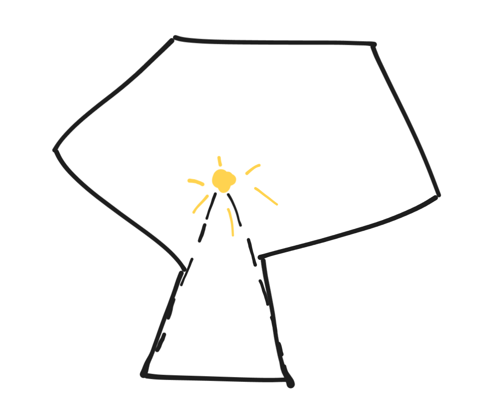

I read this problem in Computational
Geometry:Algorithms and Applications.
Consider a art gallery whose shape is a 2D simple polygon without any
hole. One is asked to put minimum number of 360° surveillance cameras
such that every wall (every edge of the polygon) can be seen from at
least one of the cameras.
The book provides a upperbound of \(\floor{n/3}\) on the minimum number of
cameras as well as a linear time algorithm to compute the solution. The
method, which is based on triangulation, is the following. Decomposing
the polygon into triangles gives us an outerplanar
graph which guarantees a 3-coloring. Observe that 3 vertices in one
triangle must have 3 different colors. Thus installing cameras on
vertices with one of the three colors is sufficient. The complexity
follows from the fact that triangulation for simple polygon can be done
in \(O(n\log^* n)\) and finding a
3-coloring in outerplanar graph takes linear time.
Note that section 3.4 of the
book contains useful comments. There is even a book
on the art gallery guardian problem. In section 1.4 the author discussed
convex partition which is partly what i’m thinking about while reading
that CG book.
Note that only one camera is needed for any convex polygon. So the
minimum number of convex decomposition is also an upperbound for the art
gallery guardian problem. However, I can only find bounds for optimal
convex decomposition with respect to the number of reflex
vertices(degree > π)…
Cameras can do even better than convex partitioning.

1 camera is sufficient
Regarding the single camera case, a recent paper shows that
testing whether a non-empty compact smooth region is star-shaped is
\(\forall \R\)-complete.
This kind of convex decomposition (maybe convex polytope covering?
I will check this
thesis when i find time.) is not described here.
The decision version of this problem is \(\exists \R\)-complete (which implies it
is NP-hard and in PSPACE). The optimization version is APX-hard. (see wikipedia
for refs)
While the are gallery guardian problem is hard, a varient called the
contiguous art gallery problem is polynomially solvable (in
time \(O(kn^2\log^2 n)\), where \(n\) is the number of vertices in the
polygon and \(k\) is the solution
size). Contiguous means that each guard is assigned a contiguous portion
of the boundary. see https://arxiv.org/pdf/2508.09734v1. (Later they close
the gap and show that the Contiguous Art Gallery problem is in \(\Theta(n\log n)\))